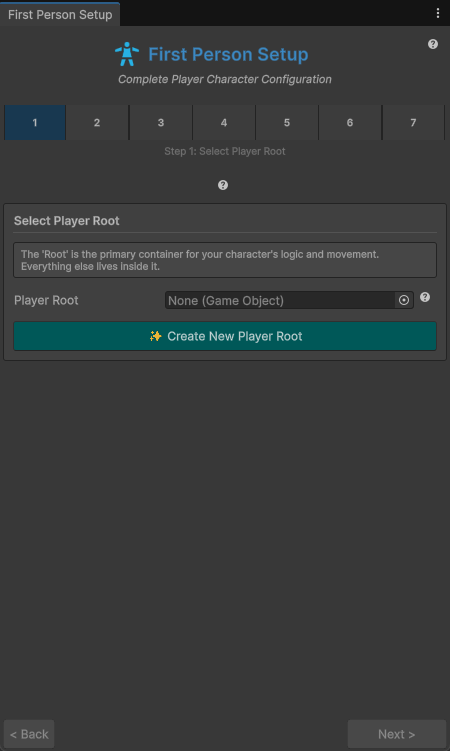
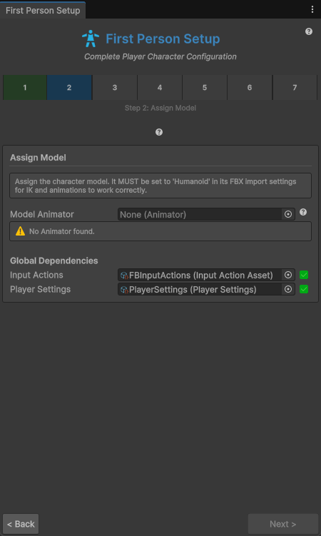
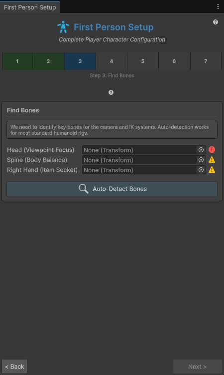
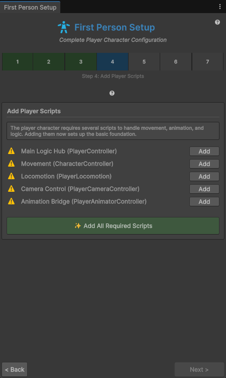
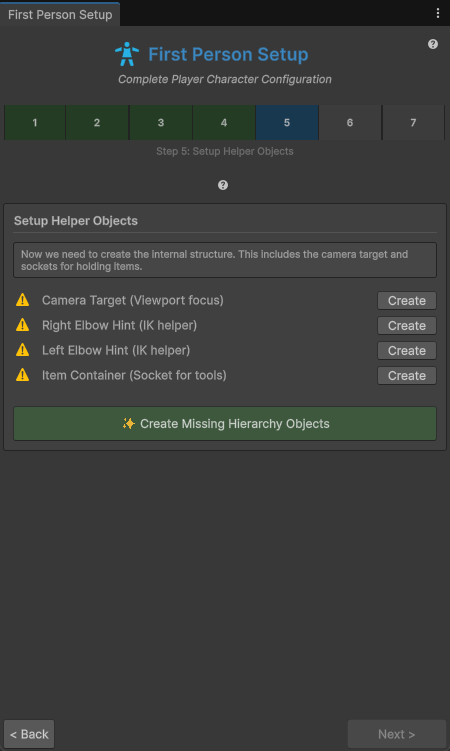
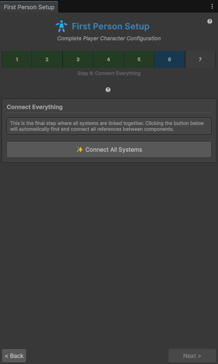

Requirements
A URP project on Unity 6.5 (6000.5.0f1)+, and a character model imported as Humanoid. See Overview for the full dependency list.
1. Import the asset
Import Easy FP Full Body Controller from the Asset Store into your URP project. The asset lives under Assets/FBSystem/.
2. Prepare a Humanoid model
Select your character FBX → Inspector ▸ Rig ▸ Animation Type: Humanoid → Apply. The Setup Wizard requires a Humanoid rig for IK and animation to work.
3. Run the 7-step Setup Wizard
Menu: Tools ▸ First Person ▸ Setup Wizard. Navigate with Next > / < Back / Finish Setup. The wizard only lets you advance once the current step's requirements are met.
Step 1: Select Player Root

The Root is the primary container for your character's logic and movement — everything else lives inside it. Either drag an existing empty GameObject into the Player Root field, or click Create New Player Root to let the wizard generate one.
Step 2: Assign Model

Assign the Model Animator (the Animator on your Humanoid character from step 2 above). The model MUST be set to Humanoid in its FBX import settings for IK and animations to work correctly — otherwise you get the "No Animator found" warning and cannot proceed. Global Dependencies (FBInputActions, PlayerSettings) are resolved automatically; both show a green checkmark once assigned.
Step 3: Find Bones

The wizard needs three key bones for the camera and IK systems:
- Head (Viewpoint Focus) — required; a red error icon appears until assigned.
- Spine (Body Balance) — auto-detected; warning icon until filled.
- Right Hand (Item Socket) — auto-detected; warning icon until filled.
Auto-detection works for most standard humanoid rigs: click Auto-Detect Bones and override any field manually if your rig is non-standard.
Step 4: Add Player Scripts

Adds the scripts that handle movement, animation, and logic. Use Add All Required Scripts to add them in one go, or add individually:
| Script | Purpose |
|---|---|
Main Logic Hub (PlayerController) | entry point / logic hub |
Movement (CharacterController) | CharacterController-based locomotion |
Locomotion (PlayerLocomotion) | movement state handling |
Camera Control (PlayerCameraController) | first-person camera, look, eye offset |
Animation Bridge (PlayerAnimatorController) | feeds the Animator |
Step 5: Setup Helper Objects

Creates the internal hierarchy: the Camera Target (viewport focus) and sockets for holding items, plus two IK hints for the elbows. Click Create Missing Hierarchy Objects (or each row's Create button) to generate:
- Camera Target (Viewport focus)
- Right Elbow Hint (IK helper)
- Left Elbow Hint (IK helper)
- Item Container (Socket for tools)
Step 6: Connect Everything

This final wiring step links all systems together. Click Connect All Systems — the wizard automatically finds and connects every reference between the components you set up in steps 1–5.
Step 7: Validation
The wizard runs a final health check over the whole setup. Everything green → Finish Setup.
4. Cut the mesh with FPCutter
So the character's head (and any other parts) hide in first person without vanishing from shadows:
- Run the FPCutter Wizard (menu
Tools ▸ FPCutter Wizard) on your character'sSkinnedMeshRendererto segment it into body parts. - The generated
FPCutterControllerhides the parts listed in Hide In First Person (default:Head). - Toggle at runtime via
SetFirstPerson()orSetThirdPerson(), or the component's context menu (View ▸ Set First Person).
5. Wire input
The asset ships FBInputActions (a Unity Input System asset) with a Player action map. PlayerInputHandler references it (actionMapName = "Player"). The Player actions:
| Action | Used by |
|---|---|
Move, Look | PlayerInputHandler → locomotion & camera |
Sprint, Jump, Crouch | PlayerInputHandler → locomotion |
Flashlight | triggers the current item's Use (HandItemSocket.UseCurrentItem()) |
Previous, Next | ItemSwitcher (number keys / scroll wheel) |
Attack, Interact | defined in the action map; consumed by the demo scripts |
Assign the FBInputActions asset to the PlayerInputHandler if the wizard didn't.
6. Press Play
Enter Play mode. You should see a full body in first person with working locomotion, look, and the held item. Verify events with the demo PlayerEventLogger (it logs every transition to the Console).
Video walkthrough
Troubleshooting
| Symptom | Fix |
|---|---|
| IK / animation broken | Model must be Humanoid (Rig ▸ Animation Type). Re-run the wizard's Assign Model step. |
| Pink materials | Project must be URP. Convert/reimport materials to URP shaders. |
| Camera clips into the head | Adjust eyeOffset or crouchEyeOffset on PlayerCameraController, and ensure FPCutter hides the head. |
| Item won't equip | HandItemSocket must be assigned; the item needs an ItemHoldData component. |
| Look feels off | Tune lookSensitivity or verticalLookLimit (or the same fields on the PlayerSettings asset). |
Ready to start with the shipped controller?
View on Asset Store ↗